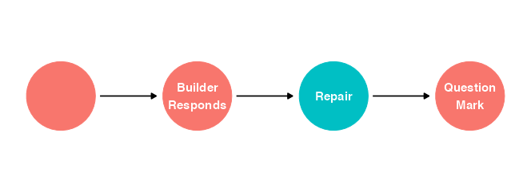
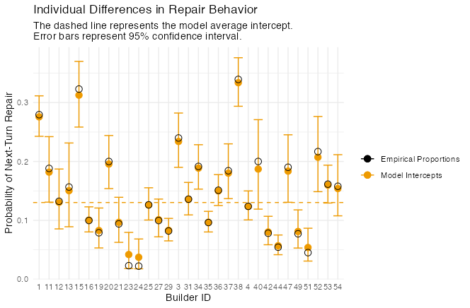

Predicting Questions in Dialogue
A sample dialogue from the Minecraft Corpus:
(1) Architect: start with a stack of 5 purple blocks in the middle
(2) Builder: Now what?
(3) Architect: cool! extend the top purple block to a row of 5 purple blocks
_(4) Architect: so like an upside down “L”__
(5) Builder: So they should extend to one side, correct?
(6) Architect: yep!
(7) Architect: nice! now, put a block above and below the second block from the right
(8) Builder: What color should those blocks be?
All three of the Builder’s turns in this dialogue (lines 2, 5, and 8) are questions. They have some qualities in common: they all request something of the interlocutor, and they all signal their status as questions with a question mark at the end. This latter feature makes them easy to identify with one line of code:
minecraftcorpusdf %>% mutate(questionmark = grepl("\\?", text))What causes people to ask questions in the Minecraft collaborative building task? Let’s start by thinking about the Builder’s questions from the excerpt above.
The question on line 2, “Now what?” does not have an obvious antecedent - the Builder seems to have understood and excecuted the previous instruction and is now merely moving the conversation along by asking for another one.
The questions on lines 5 and 8, on the other hand, do have clear antecedents in the conversation. Specifically, they each refer to the architect’s immediately preceding instruction and request clarification thereof. These questions can therefore be considered repair initiations, turns in talk that identify trouble (i.e. a need for clarification) in a preceding turn or turns uttered by an interlocutor.
Hence the first theoretical answer to my question: What causes people to ask questions? The need for clarification.
Of course not all questions are repair initiations, and not all repair initiations are presented as questions. Nevertheless, the structure of the Minecraft collaborative building task makes the correlation very high. In the task, the Architect has access to all of the information that the Builder needs to proceed (the design of the target structure) and information is the only thing that the Builder can get from the Architect. This means that pretty much all of the Builder’s questions are aimed at clarifying information coming from the Architect.
For these reasons, and since I have no way of identifying true repair iniitations other than going through the whole corpus myself, I will operationally define repair as any Builder’s utterance that includes a question mark.
minecraftcorpusdf %>% mutate(repair = questionmark & role == "B")To convince you that almost all Builder questions in the corpus really are repair initiations, here are 10 randomly selected repairs:
minecraftcorpusdf %>%
filter(repair == TRUE) %>%
select(text) %>%
sample_n(10)
#> 1785 like that?
#> 4312 like so? or like that?
#> 14821 Are they on the ground?
#> 15121 here?
#> 628 like that?
#> 3642 ooooh like this?
#> 1571 it might be easier to describe all one color? then build from there?
#> 182 is the purple supposed to be on the third level? i think i could make it float..
#> 12521 Facing towards the middle?
#> 2951 is this correct?Even without looking at context, it seems clear at a glance that all but line 1571 here are indeed repairs.
How to Predict Repair
Before I start exploring predictor variables, I need to figure out how to model the probability of repair. My first instinct was use Builder turns as cases and model whether of not they are repairs. There’s a fatal flaw with this plan though: the natural alternative to initiating repair is probably not initiating something other than repair. The alternative is more likely to be not saying anything. In other words, we only have data about whether or not texts the Builder sent were repairs. We have no data about texts the Builder didn’t send.
I’ll draw that more formally as a DAG:
library(ggdag)
shorten_dag_arrows <- function(tidy_dag, shorten_distance){
# Update underlying ggdag object
tidy_dag$data <- dplyr::mutate(tidy_dag$data,
proportion = shorten_distance/sqrt((xend - x)^2 + (yend - y)^2),
xend = (1-proportion/2)*(xend - x) + x,
yend = (1-proportion/2)*(yend - y) + y,
xstart = (1-proportion/2)*(x - xend) + xend,
ystart = (1-proportion/2)*(y-yend) + yend) %>% select(!proportion)
return(tidy_dag)
}
# Length -> TF-IDF Sum -> Probability of Repair -> Question Mark at End
# Turns since Last Repair -> Probability of Repair -> Question Mark at End
dag_coords_0 <-
tibble(name = c("C", "U", "R", "Q"),
x = c(1, 2, 3, 4),
y = c(2, 2, 2, 2))
dagify(U ~ C,
R ~ U,
Q ~ R,
coords = dag_coords_0) %>%
tidy_dagitty() %>%
shorten_dag_arrows(.25) %>%
dag_label(labels = c("C" = "",
"U" = str_wrap("Builder Responds", 10),
"R" = "Repair",
"Q" = str_wrap("Question Mark", 10))) %>%
ggplot(aes(x = x, y = y, xend = xend, yend = yend)) +
geom_dag_point(aes(color = name == "R"), size = 30, show.legend = F) +
geom_dag_text(aes(label = label), size = 4) +
scale_x_continuous(NULL, breaks = NULL, expand = c(.1, .1)) +
scale_y_continuous(NULL, breaks = NULL, expand = c(.1, .1)) +
geom_dag_edges(aes(x = xstart, y = ystart)) +
theme_dag()
As yet undiscussed variables predict whether or not the Builder will respond to an instruction from the Architect, which in turn predicts whether the response will be a repair initiation (if the Builder doesn’t respond there’s zero probability of the response being anything), which in turn influences our proxy variable, the presence of a question mark.
All of this means that my inital stategy would probably wash out any effect of predictors on repair, since we would already be stratifying by whether the Builder responds. I think the simplest way to solve this problem is to use Architect turns as cases and predict whether or not the next turn will be a Builder repair. Sometimes the next turn will be another Architect turn (when Builder did not respond), and sometimes it will be a non-repair Builder turn.
Time to code a few predictor variables.
# Orthographic Length of Previous Turn
# Mean TF-IDF of previous turn (word-fanciness? information density?)
# Sum TF-IDF of previous turn (lexical complexity? information?)
# Turns since last question asked
d1 <- convert(minecraftcorpus_tfidf, to = "data.frame") %>%
select(!doc_id) %>%
transmute(tfidfsum = rowSums(across())) %>%
bind_cols(minecraftcorpusdf) %>%
select(!c(file, session)) %>%
mutate(repair = grepl("\\?", text) & role == "B",
repair_next = NA,
length = nchar(text),
charssincerepair = 0,
partner = if_else(role == "B",
str_remove_all(str_sub(conversation, -2, -1), "A"),
str_remove_all(str_sub(conversation, 2, 3), "-")))
charssincerepair <- 0L
for (n in 2:nrow(d1)) {
if(d1$conversation[n-1L] != d1$conversation[n]) {
charssincerepair <- 0L
}
if(d1$repair[n] == TRUE & d1$role[n] == "B"){
charssincerepair <- 0L
}
d1$charssincerepair[n] <- charssincerepair
charssincerepair <- charssincerepair + d1$length[n]
}
for (n in 1:(nrow(d1)-1L)) {
if(d1$conversation[n+1L] == d1$conversation[n]) {
d1$repair_next[n] <- d1$repair[n+1]
}
}
# Repair as Factor, + Case Index
d1 <- d1 %>%
mutate(repair_next = factor(repair_next, levels = c(FALSE, TRUE)),
case = factor(1:n()))
d1 <- d1 %>%
filter(role == "A",
charssincerepair != 0,
tfidfsum != 0) %>%
mutate(charssincerepair_log = log(charssincerepair),
charssincerepair_log_s = (charssincerepair_log-mean(charssincerepair_log, na.rm = T))/sd(charssincerepair_log, na.rm = T),
tfidfsum_log = log(tfidfsum),
tfidfsum_log_s = (tfidfsum_log - mean(tfidfsum_log, na.rm = T))/sd(tfidfsum_log, na.rm = T))Length of Previous Turn
I have already theorized that the likelihood of a given Builder turn being a repair initiation is increased by the need for clarification of previous turns. Are there certain types of instructions that need to be clarified more often? How about long and complicated ones?
Here’s a quick and dirty graph of repair against length of the previous turn, with repair formatted as numeric and a Loess line running between No and Yes:
library(ggbeeswarm)
d1 %>%
ggplot(aes(length, (as.numeric(repair_next)-1))) +
geom_quasirandom(method = "pseudorandom",
width = .2,
groupOnX = F,
alpha = .1,
varwidth = T) +
geom_smooth() +
scale_x_continuous(trans = "log10") +
scale_y_continuous(breaks = c(0, .25, .5, .75, 1),
labels = c("No", .25, .5, .75, "Yes")) +
labs(x = "Length of Turn (characters, log scale)",
y = "Probability of Next-Turn Repair") +
theme_minimal()
Looks promising! It’s hard to tell just by looking at the data points, but the regression line seems to think that longer previous turns are associated wih more repairs. It is worth noting at this point that there are very few next-turn repairs and very many next-turn non-repairs. This means that when we model this formally we will have to be careful interpreting the regression coefficients.
We might do a bit better if, rather than counting the number of characters, we had a measure more closely related to how much information is being conveyed. TF-IDF (Term Frequency * Inverse Document Frequency) fits the bill. The TF-IDF of a word describes how rare it is in the whole corpus vs. how common it is in its own turn. Presumably, rarer words are less predictable and therefore more informative and more confusing. The sum of TF-IDF scores of all words in an turn should tell us something about how much new semantic material is included in each turn.
This looks similar to the first one. Indeed, TF-IDF Sum and Turn length are correlated in the corpus at r = 0.956. Nevertheless, I’m going to stick with TF-IDF Sum because it makes more sense to me as a theoretical predictor.
Bayesian Modeling
I’ll start by simulating reasonable priors. I’ll let the slope be positive or negative. Less than 15% of Builder turns are repairs, so I’ll lower the intercepts. After playing around with the parameters a bit, I settled on this:
# Simulating Reasonable Priors
d1 %>%
group_by(repair_next) %>%
summarise(perc = 100*n()/nrow(.)) # 14.3% of Architect turns are immediately followed by a Builder repair initiation
priors <-
tibble(n = 1:50,
a = rnorm(50, -1.5, 1),
b = rnorm(50, 0, 1)) %>%
expand(nesting(n, a, b), x = seq(from = -3, to = 3, length.out = 200)) %>%
mutate(p = inv_logit_scaled(a+b*x)) %>%
arrange(n) %>%
mutate(n = factor(n))
priors %>%
ggplot(aes(x, p, group = n)) +
geom_line(alpha = .5)Let’s set up the model.
library(brms)
library(tidybayes)
tfidf_mod <- brm(
repair_next ~ 1 + tfidfsum_log_s,
data = d1,
family = bernoulli,
prior = c(prior(normal(-1.5, 1), class = Intercept),
prior(normal(0, 1), class = b)),
sample_prior = "yes")Here’s the model summary:
print(tfidf_mod))## Family: bernoulli
## Links: mu = logit
## Formula: repair_next ~ 1 + tfidfsum_log_s
## Data: d1 (Number of observations: 11754)
## Draws: 4 chains, each with iter = 2000; warmup = 1000; thin = 1;
## total post-warmup draws = 4000
##
## Population-Level Effects:
## Estimate Est.Error l-95% CI u-95% CI Rhat Bulk_ESS Tail_ESS
## Intercept -1.82 0.03 -1.87 -1.77 1.00 3175 2569
## tfidfsum_log_s 0.26 0.03 0.20 0.31 1.00 2970 2172
##
## Draws were sampled using sampling(NUTS). For each parameter, Bulk_ESS
## and Tail_ESS are effective sample size measures, and Rhat is the potential
## scale reduction factor on split chains (at convergence, Rhat = 1).Now I can sample the posteriors and see what the models thinks.
library(ggbeeswarm)
d1$tfidfsum_log_s[d1$tfidfsum == min(d1$tfidfsum, na.rm = T)] # -2.87
d1$tfidfsum_log_s[d1$tfidfsum == max(d1$tfidfsum, na.rm = T)] # 2.51
# Sample Prior and Posterior
tfidf_mod_priors <- as_draws_df(tfidf_mod, c("prior_Intercept", "prior_b"))[1:100,] %>%
as_tibble() %>%
mutate(n = factor(1:100)) %>%
expand(nesting(n, prior_Intercept, prior_b), x_log_s = seq(from = -2.9, to = 2.51, length.out = 200)) %>%
mutate(p = inv_logit_scaled(prior_Intercept+prior_b*x_log_s),
x_log = x_log_s * sd(d1$tfidfsum_log) + mean(d1$tfidfsum_log),
x = exp(x_log))
n_iter <- 50
tfidf_mod_fitted <-
fitted(tfidf_mod,
newdata = tibble(tfidfsum_log_s = seq(from = -2.9, to = 2.51, length.out = 200)),
summary = F,
nsamples = n_iter) %>%
as_tibble() %>%
mutate(iter = 1:n_iter) %>%
pivot_longer(-iter) %>%
mutate(tfidfsum_log_s = rep(seq(from = -2.9, to = 2.51, length.out = 200), times = n_iter)) %>%
mutate(tfidfsum_log = tfidfsum_log_s * sd(d1$tfidfsum_log) + mean(d1$tfidfsum_log),
tfidfsum = exp(tfidfsum_log_s * sd(d1$tfidfsum_log) + mean(d1$tfidfsum_log)))
tfidf_mod_postpredict <- tfidf_mod_fitted %>%
ggplot(aes(x = tfidfsum)) +
geom_hline(yintercept = .5, color = "red") +
geom_line(aes(y = value, group = iter), color = "blue", alpha = .1) +
geom_line(data = tfidf_mod_priors,
aes(x, p, group = n), color = "black", alpha = .08) +
geom_quasirandom(data = d1,
aes(x = tfidfsum,
y = as.integer(repair_next)-1),
alpha = 1/10,
groupOnX = F,
width = 1/10,
method = "pseudorandom",
varwidth = T) +
scale_x_continuous(trans = "log10", minor_breaks = seq(10, 100, by = 10)) +
scale_y_continuous(breaks = c(0, .25, .5, .75, 1),
labels = c("No", .25, .5, .75, "Yes")) +
labs(title = "Data with Prior and Posterior Predictions",
y = "Probability of Next-Turn Repair",
x = "Sum TF-IDF (Log Scale)") +
theme_minimal()
tfidf_mod_postpredictThe faint grey lines are 100 samples from the prior distribution. In blue are 50 samples from the posterior.

The posterior predictions look almost like a straight line on the logarithmic scale - for very short, simple instructions from the Architect, the Builder’s response is most likely not to be a repair. As total TF-IDF goes up, the probability of repair does too, at first rapidly, then more slowly.
Time Since Last Repair
As described in Dingemanse et al. (2015), another predictor of repair is the time elapsed since the last repair. People don’t tend to initiate repair twice in a row. In lieu of using actual timestamps, I’ll use the total number of characters typed as a proxy for time elapsed. I’ll use the same priors as before.
charssincerepair_mod <- brm(
repair_next ~ 1 + charssincerepair_log_s,
data = d1,
family = bernoulli,
prior = c(prior(normal(-1.5, 1), class = Intercept),
prior(normal(0, 1), class = b)),
sample_prior = "yes")print(charssincerepair_mod)## Family: bernoulli
## Links: mu = logit
## Formula: repair_next ~ 1 + charssincerepair_log_s
## Data: d1 (Number of observations: 11754)
## Draws: 4 chains, each with iter = 2000; warmup = 1000; thin = 1;
## total post-warmup draws = 4000
##
## Population-Level Effects:
## Estimate Est.Error l-95% CI u-95% CI Rhat Bulk_ESS Tail_ESS
## Intercept -1.81 0.03 -1.87 -1.76 1.00 3148 2719
## charssincerepair_log_s -0.24 0.03 -0.29 -0.19 1.00 3209 2570
##
## Draws were sampled using sampling(NUTS). For each parameter, Bulk_ESS
## and Tail_ESS are effective sample size measures, and Rhat is the potential
## scale reduction factor on split chains (at convergence, Rhat = 1).charssincerepair_mod_priors <- as_draws_df(charssincerepair_mod, c("prior_Intercept", "prior_b"))[1:100,] %>%
as_tibble() %>%
mutate(n = factor(1:100)) %>%
expand(nesting(n, prior_Intercept, prior_b), x_log_s = seq(from = -4, to = 2.63, length.out = 200)) %>%
mutate(p = inv_logit_scaled(prior_Intercept+prior_b*x_log_s),
x_log = x_log_s * sd(d1$charssincerepair_log) + mean(d1$charssincerepair_log),
x = exp(x_log))
n_iter <- 50
charssincerepair_mod_fitted <-
fitted(charssincerepair_mod,
newdata = tibble(charssincerepair_log_s = seq(from = -4, to = 2.63, length.out = 200)),
summary = F,
nsamples = n_iter) %>%
as_tibble() %>%
mutate(iter = 1:n_iter) %>%
pivot_longer(-iter) %>%
mutate(charssincerepair_log_s = rep(seq(from = -4, to = 2.63, length.out = 200), times = n_iter)) %>%
mutate(charssincerepair_log = charssincerepair_log_s * sd(d1$charssincerepair_log) + mean(d1$charssincerepair_log),
charssincerepair = exp(charssincerepair_log_s * sd(d1$charssincerepair_log) + mean(d1$charssincerepair_log)))
charssincerepair_mod_postpredict <- charssincerepair_mod_fitted %>%
ggplot(aes(x = charssincerepair)) +
geom_hline(yintercept = .5, color = "red") +
geom_line(aes(y = value, group = iter), color = "blue", alpha = .1) +
geom_line(data = charssincerepair_mod_priors,
aes(x, p, group = n), color = "black", alpha = .08) +
geom_quasirandom(data = d1,
aes(x = charssincerepair,
y = as.integer(repair_next)-1),
alpha = 1/10,
groupOnX = F,
width = 1/10,
method = "pseudorandom",
varwidth = T) +
scale_x_continuous(trans = "log10", minor_breaks = seq(10, 100, by = 10)) +
scale_y_continuous(breaks = c(0, .25, .5, .75, 1),
labels = c("No", .25, .5, .75, "Yes")) +
labs(title = "Data with Prior and Posterior Predictions",
y = "Probability of Next-Turn Repair",
x = "Total Characters Since Last Repair (Log Scale)") +
theme_minimal()
charssincerepair_mod_postpredict
Hmmm. The model thinks that repairs get less likely as time goes on after the last repair. I have a hard time believing that. Where did I go wrong?
Answer: I didn’t use a multilevel model.
What I think is happening is this: most of the variation in likelihood of next-turn repair is between participants. As it happens, pairs of participants in which the Builder is more likely to initiate next-turn repair are also more likely to have short turns and therefore fewer total characters since the last repair. Or something like that.
Before I get into complicated modeling to test this directly, I’ll drive home the main point with a simple, intercept-only multilevel model.
bysubj_mod <-
brm(data = d1,
family = bernoulli,
repair_next ~ 1 + (1 | partner),
prior = c(prior(normal(-1.5, 1), class = Intercept),
prior(exponential(1), class = sd)),
iter = 5000, chains = 4, cores = 2,
sample_prior = "yes")
plot(bysubj_mod)
print(bysubj_mod)
bysubj_mod_post <- as_draws(bysubj_mod)
bysubj_mod_post_mdn <-
coef(bysubj_mod, robust = T)$partner[, , ] %>%
data.frame() %>%
mutate(post_mdn = inv_logit_scaled(Estimate),
post_97.5 = inv_logit_scaled(Q97.5),
post_2.5 = inv_logit_scaled(Q2.5),
partner = unique(d1$partner)) %>%
right_join(d1) %>%
group_by(Estimate, Est.Error, post_2.5, post_97.5, post_mdn, partner) %>%
summarise(prop_repair_next = sum(repair_next == T)/n())
View(bysubj_mod_post)
bysubj_mod_post_mdn %>%
ggplot(aes(partner)) +
geom_hline(yintercept = inv_logit_scaled(median(bysubj_mod_post$`1`$b_Intercept)),
linetype = 2, color = "orange2") +
geom_point(aes(y = post_mdn, color = "Model Intercepts"), size = 3) +
geom_errorbar(aes(ymin = post_2.5, ymax = post_97.5, color = "Model Intercepts")) +
geom_point(aes(y = prop_repair_next, color = "Empirical Proportions"), size = 3, shape = 1) +
labs(title = "Individual Differences in Repair Behavior",
subtitle = str_wrap("The dashed line represents the model average intercept.
Error bars represent 95% confidence interval.", 60),
x = "Builder ID",
y = "Probability of Next-Turn Repair") +
scale_color_manual(name = element_blank(),
values = c("black", "orange2")) +
theme_minimal()
As expected, different Builders have vastly different likelihoods of initiating next-turn repair.
Now for the monster model. I just showed that different Builders have different likelihoods of initiating next-turn repair, but the same is probably true for different Architects. An Architect who likes to type a lot of turns in a row will lower the probability of any given next-turn being a repair, just as a Builder who initiates repair a lot will raise the probability. Clustering by both Architect and Builder gets complicated, and for now I’m only interested in group-level effects, so I’m just going to cluster by conversation and leave the model agnostic about whether it’s the Builder, the Architect, or some interaction between them that’s causing any difference. I’m also allowing both intercept and slope to vary, and telling the model to estimate the correlation between them.
charssincerepair_bysubj_mod <-
brm(data = d1,
family = bernoulli,
repair_next ~ 1 + charssincerepair_log_s + (1 + charssincerepair_log_s | conversation),
prior = c(prior(normal(-1.5, 1), class = Intercept),
prior(normal(0, 1), class = b),
prior(exponential(1), class = sd),
prior(lkj(2), class = cor)),
iter = 5000, chains = 4, cores = 2)
print(charssincerepair_bysubj_mod)## Family: bernoulli
## Links: mu = logit
## Formula: repair_next ~ 1 + charssincerepair_log_s + (1 + charssincerepair_log_s | conversation)
## Data: d1 (Number of observations: 11754)
## Draws: 4 chains, each with iter = 5000; warmup = 2500; thin = 1;
## total post-warmup draws = 10000
##
## Group-Level Effects:
## ~conversation (Number of levels: 64)
## Estimate Est.Error l-95% CI u-95% CI Rhat
## sd(Intercept) 0.76 0.08 0.62 0.94 1.00
## sd(charssincerepair_log_s) 0.13 0.06 0.01 0.25 1.00
## cor(Intercept,charssincerepair_log_s) 0.29 0.28 -0.33 0.79 1.00
## Bulk_ESS Tail_ESS
## sd(Intercept) 2003 3424
## sd(charssincerepair_log_s) 1927 2051
## cor(Intercept,charssincerepair_log_s) 7747 4847
##
## Population-Level Effects:
## Estimate Est.Error l-95% CI u-95% CI Rhat Bulk_ESS Tail_ESS
## Intercept -1.87 0.10 -2.08 -1.68 1.00 1365 2679
## charssincerepair_log_s 0.02 0.04 -0.05 0.09 1.00 7615 7229
##
## Draws were sampled using sampling(NUTS). For each parameter, Bulk_ESS
## and Tail_ESS are effective sample size measures, and Rhat is the potential
## scale reduction factor on split chains (at convergence, Rhat = 1).Bingo. The population-level effect of characters since repair is now slightly positive! Let’s visualize that:
The blue line is the model’s estimate of the average effect of characters since last repair on repair probability within groups, with its 95% confidence interval. The grey lines are estimates for each conversation. This time I’m convinced - the effect of content elapsed since the last repair is small if it exists at all. The graph I linked to above from Dingemanse et al. (2015) shows the probability that repair will have occured, which of course rapidly approaches 1 as time goes on. The probability that any given turn will be a repair initiation doesn’t seem to change much, at least in the Minecraft corpus.
All this makes me want to re-do my analysis of TF-IDF Sum as a multilevel model. Here’s what that looks like:
tfidfsum_bysubj_mod <-
brm(data = d1,
family = bernoulli,
repair_next ~ 1 + tfidfsum_log_s + (1 + tfidfsum_log_s | conversation),
prior = c(prior(normal(-1.5, 1), class = Intercept),
prior(normal(0, 1), class = b),
prior(exponential(1), class = sd),
prior(lkj(2), class = cor)),
iter = 5000, chains = 4, cores = 2)
print(tfidfsum_bysubj_mod)## Family: bernoulli
## Links: mu = logit
## Formula: repair_next ~ 1 + tfidfsum_log_s + (1 + tfidfsum_log_s | conversation)
## Data: d1 (Number of observations: 11754)
## Draws: 4 chains, each with iter = 5000; warmup = 2500; thin = 1;
## total post-warmup draws = 10000
##
## Group-Level Effects:
## ~conversation (Number of levels: 64)
## Estimate Est.Error l-95% CI u-95% CI Rhat Bulk_ESS
## sd(Intercept) 0.76 0.08 0.62 0.93 1.00 1843
## sd(tfidfsum_log_s) 0.12 0.06 0.01 0.23 1.00 2173
## cor(Intercept,tfidfsum_log_s) -0.15 0.31 -0.72 0.50 1.00 9390
## Tail_ESS
## sd(Intercept) 3034
## sd(tfidfsum_log_s) 3267
## cor(Intercept,tfidfsum_log_s) 5410
##
## Population-Level Effects:
## Estimate Est.Error l-95% CI u-95% CI Rhat Bulk_ESS Tail_ESS
## Intercept -1.92 0.10 -2.11 -1.72 1.00 1431 2332
## tfidfsum_log_s 0.27 0.04 0.20 0.34 1.00 8006 6499
##
## Draws were sampled using sampling(NUTS). For each parameter, Bulk_ESS
## and Tail_ESS are effective sample size measures, and Rhat is the potential
## scale reduction factor on split chains (at convergence, Rhat = 1).Didn’t change much here, but it does look like the population-level effect is slightly higher than with the fixed-effects model. Interestingly enough, the model estimates that the intercept and beta are slightly negatively correlated. That means that pairs who initiate repair more in general also show less effect of utterance length (or TF-IDF sum, to be exact) on their rates. It seems possible to me that, in highly informational contexts like the Minecraft collaborative building task, some people have a top-down push to just initiate repair as much as possible, regardless of whether or not there’s an obvious need for it. All of this is pretty speculative though, since the estimated error on the correlation parameter is enormous.
Here’s what the new model looks like as a graph: